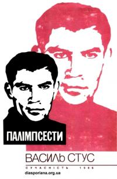
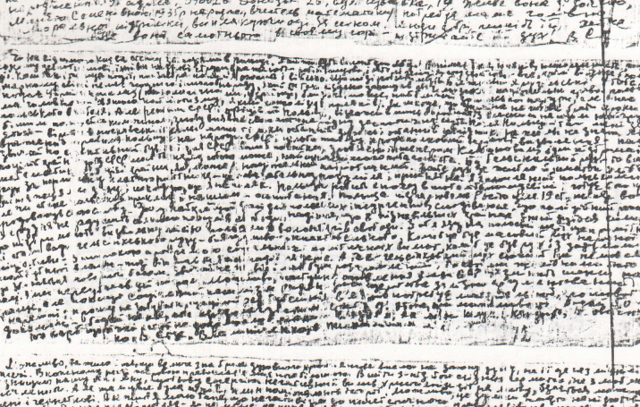

Художній світ Василя Стуса потребує аналізу не лише з позицій літературознавства, але й через призму суворої філософської методології. Його поезія є унікальним явищем в українській інтелектуальній історії ХХ століття, оскільки вона репрезентує глибоко вкорінену та самостійно розроблену систему екзистенціалізму та трагічного стоїцизму. Вірші Стуса позбавлені сентиментальної слабкості; це строга, герметична аналітика людського духу, який перебуває під максимальним зовнішнім тиском.
Для європейського екзистенціалізму, що сформувався у 1930-1940-х роках, базовими концептами є абсурдність буття, тотальна самотність індивіда, страх, страждання та неминучість смерті. Проте найвищою цінністю визнається абсолютна свобода особистості, яка змушена протидіяти ворожому середовищу, державі та суспільству, що нав'язують їй свою волю та інтереси. Стус імплементував ці ідеї в реалії радянського концтабірного досвіду, вивівши екзистенціалізм із площини теоретичних абстракцій у площину щоденного виживання та збереження розуму.
1930–1940 рр.
• Абсурдність буття
• Тотальна самотність
• Страх і страждання
• Неминучість смерті
• Свобода як найвища цінність
Концтабірний досвід
• Щоденне виживання
• Збереження розуму
• Внутрішня свобода
• Опір системі
• Духовна незламність
Усвідомлення неминучості фізичного знищення
при категоричній відмові визнати духовну поразку
• Духовна незворушність
• Мужність під час катастроф
• Прийняття долі
• Внутрішній спокій
• Префікс "трагічний"
• Активний опір
• "Самособоюнаповнення"
• Пріоритет власного розвитку
Основний принцип: Людина є відкритою структурою. Простір її можливостей обмежений лише власною волею до самовдосконалення.
| Компонент філософії | Характеристика у творчості Стуса |
|---|---|
| Екзистенціалізм | Життя як невпинна драма свободи. Внутрішній світ — єдиний плацдарм для боротьби. |
| Стоїцизм | Духовна незворушність і мужність. Категорична відмова від духовної поразки. |
| Трагічне | Усвідомлення неминучості знищення при збереженні внутрішньої свободи. |
| "Самособоюнаповнення" | Безперервний процес розбудови власного "Я" незалежно від агресивності реальності. |

У його поезії життя тлумачиться як невпинна драма свободи. В умовах, коли система знищує будь-який зовнішній простір для діяльності індивіда, єдиним плацдармом для боротьби залишається внутрішній світ. Концепція Стуса ґрунтується на моральних та світоглядних засадах: людина є відкритою структурою, простір її можливостей обмежений лише її власною волею до самовдосконалення. Він розробив концепт самособоюнаповнення — безперервного процесу розбудови власного "Я", незалежно від того, наскільки агресивною є зовнішня реальність.
Основною рисою ліричного героя Стуса є стоїцизм. В античній філософії стоїки прагнули досягти духовної незворушності, зберігаючи мужність під час життєвих катастроф. Стусівський стоїцизм набуває префікса "трагічний", оскільки він усвідомлює неминучість фізичного знищення, але категорично відмовляється визнати духовну поразку. Як зазначають дослідники його творчості, ліричний герой Стуса є людиною, яка апріорі внутрішньо вільна, незважаючи на обставини та всупереч їм. У ситуації тотального фізичного нищення ця людина ігнорує ідеологічний диктат, демонструючи пріоритет власного розвитку над вимогами системи.
Вершиною поетичної та філософської думки Василя Стуса стала збірка Палімпсести, над якою він працював у 1971-1977 роках, і яка вийшла окремим виданням у Мюнхені лише в 1986 році. Назва цієї збірки має колосальне символічне навантаження. Палімпсест в античності та середньовіччі — це пергамент, на якому первісний текст був стертий, щоб звільнити місце для нового напису, проте з часом старий текст неминуче проступав крізь нові нашарування і ставав придатним для прочитання.
Первісний текст: Українська ідентичність, мова, культура, історична пам'ять.
Спроба стерти: Російська імперська політика, цензура, репресії, асиміляція.
Неминуче проступання: Національне відродження, творчість Стуса, деколонізація.
Для Стуса палімпсест став універсальною моделлю історичної пам'яті української нації. Російська імперія століттями намагалася стерти первісний текст української ідентичності, накладаючи поверх нього свої наративи, заборони та ідеологеми. Однак знищити цей текст остаточно виявилося неможливим; він продовжував проступати крізь цензуру, репресії та асиміляцію. У цій збірці Стус досяг найвищого рівня культури мислення, глибинного проникнення у світовідношення та досконалості мистецької форми, стверджуючи безсмертність мистецького слова як форми національного опору.
Важливим елементом його світогляду була медитативна лірика, де звучить мотив Бога та пошуків духовної опори. У вірші Господи, гніву пречистого..., написаному у 1972 році, поет звертається до Всевишнього з проханням допомогти вистояти у тяжких фізичних та душевних випробуваннях. Це не молитва про порятунок тіла чи уникнення кари; це суворий екзистенційний запит на збереження сили духу, неповторності власної долі та здатності подолати страх перед смертю. Поет декларував своє кредо: Як добре те, що смерті не боюсь я.... Цей стан душі, коли людину вже ніщо не страшить, надав творчості Стуса філософської довершеності.
Надмір екзистенційного переживання відбувався на такій межі самоспалення, що вимагав нових форм художнього вираження. В останні роки життя Стус часто відмовлявся від традиційного римування, вважаючи його "дитячими забавками", і переходив до верлібру (вільного вірша) та білих віршів, що підкреслювало інтелектуальну строгість і зосередженість його текстів.
Трагізм його філософського шляху підкреслюється втратою його останньої таборової збірки Птах душі. Цей рукопис, який містив близько 300 оригінальних віршів та перекладів, був вилучений адміністрацією концтабору і його доля досі залишається невідомою. Знищення цього рукопису є безпрецедентним актом інтелектуального терору. Система розуміла: фізична смерть автора не означає перемоги, якщо його думка продовжує жити. Тому метою було тотальне анігілювання не лише тіла, але й духу. Ті невеликі фрагменти, що збереглися завдяки мужності дисидентів (зокрема тексти З таборового зошита, які були написані дрібним почерком на смужках технічного паперу і таємно вивезені Іреною Гаяускас), засвідчують, що філософія стоїцизму Василя Стуса витримала випробування абсолютною ізоляцією.